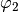
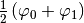
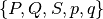
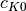
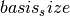
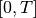

Configuration and Settings¶
In this chapter we describe the settings and valid configuration parameters for running simulations.
Warning
The following sections describe the settings of the old
WaveBlocks code and do only partially apply to the new
WaveBlocksND code.
Time propagation algorithms¶
At the moment, three algorithms for time propagation of initial values are implemented.
| Name | Description |
|---|---|
| fourier | Fourier propagation / Operator splitting |
| hagedorn | Homogeneous Hagedorn wavepackets |
| multihagedorn | Inhomogeneous Hagedorn wavepackets |
Specifying initial values¶
Initial values are always specified as wave-packets. For the Fourier propagator,
the packets are sampled at the grid nodes and for packet based algorithms, these
initial packets are just propagated. The two configuration variables parameters
and coefficients are responsible for specifying the initial wave-packets.
Their values are interpreted as usual but let’s look at this important part
a bit closer.
For the fourier Propagator¶
The initial values for the fourier propagator are given in the simulation
configuration file by the variable initial_values. The data format is
a list of arbitrary length. Each entry is a list itself having the format:
[ level, parameters, [(index,value), (index,value), ...] ]
where the level is the energy level, the parameters is a 5-tuple
of the usual form (q,p,Q,P,S) containing the wave-packet’s parameter. The
third part is a list containing one or several (index,value) pairs
which hold the value  of the coefficient with index
of the coefficient with index  . We know
that this is all the data necessary for constructing a wave-packet that lives on
the given energy level. (But remember that these packets are sampled at the grid
nodes later to be usable for the Fourier propagation.)
. We know
that this is all the data necessary for constructing a wave-packet that lives on
the given energy level. (But remember that these packets are sampled at the grid
nodes later to be usable for the Fourier propagation.)
This input format allows us to place several wave-packets on the same energy level, for example the following valid specification places two Gaussian packets which will run into each other and bounce off:
initial_values = [[ 0, (P, Q, S, -0.5, 2.0), [(0,1.0)]],
[ 0, (P, Q, S, 0.5, -2.0), [(0,1.0)]]]
For compatibility reasons the input can also be of the format described in the next two sections. This allows for sharing of simulation configurations.
For the hagedorn Propagator¶
For this propagator we need one set of parameters which belong to the leading component. With these parameters we then set up a homogeneous wave-packet. We can specify the parameters as follows:
parameters = (q, p, Q, P, S)
with some meaningful values for  ,
,  ,
,  and
and  and
and  . For compatibility with the inhomogeneous case, we can also
specify the parameters as:
. For compatibility with the inhomogeneous case, we can also
specify the parameters as:
parameters = [ (P0, Q0, S0, p0, q0), ..., (Pn, Qn, Sn, pn, qn) ]
where there are as many inner tuples as energy levels. The initialization
code then picks just the single tuple with its index matching the
leading_component value. This allows easy sharing of
configuration files with minimal editing.
The coefficients of the linear combination are specified for each
level separately. There is a list of (index,value) pairs for
each energy level and all these lists are collected in one big list
assigned to the variable coefficients. This could for example look like:
coefficients = [[ (0,1.0), (2,0.5), (4,0.2)],
[ (0,0.1), (3,1.2)]]
where we have two energy levels (note that the wave function here is not normalized!).
These (index,value) pairs give the value of the coefficient
with index . For example the list containing only the pair [ (2,1.0) ]
yields a  packet while the list [ (0,0.5), (1,0.5) ] gives
a superposition of . If you
wish to have no wave-packet on an energy level just provide the dummy pair [ (0,0.0) ].
For the multihagedorn Propagator¶
This propagator needs a set of parameters for each energy level. Thus the data structure must look like:
parameters = [ (P0, Q0, S0, p0, q0), ..., (Pn, Qn, Sn, pn, qn) ]
where there are as many inner tuples as energy levels. The coefficients
are specified the same way as in the homogeneous case above.
Required parameter sets¶
The simulations can be configured with a very flexible scheme. One must only specify the values that are really necessary and can omit all others. There are some input parameters that have to be provided in any case and many others that are only necessary for a specific algorithm or are purely optional.
In this section all parameters that can be provided are listed. You are free to define additional parameters and use them in a data evaluation script. Just make sure there is no variable name clash.
Parameters for all propagation algorithms¶
algorithmThe simulation algorithm.
- Possible values:
fourier,hagedorn,multihagedorn - Data type: string
- Possible values:
potentialThe potential
- Possible values: see Section Ready made Potentials
- Data type: string or dict
TThe time when the simulation stops
- Possible values: Non-negative float
- Data type: float
dtThe size of a single time step
- Possible values: Non-negative float
- Data type: float
epsThe semi-classical scaling parameter
- Possible values: Non-negative float
- Data type: float
parameters- The Hagedorn parameters  of the initial wave-packets. The exact format of this variable depends on the simulation algorithm used, see above.
coefficients- A list with the lists of (index,value) tuples that set the coefficients of the basis functions for the initial wave-packets. The exact format of this variable depends on the simulation algorithm used, see above.
write_nthSave simulation data every n-th time-step
- Possible values: Positive Integer where the case 0 is interpreted as
never. In this case only the initial values are saved.
Data type: integer
Default value: is 0 if no other value is provided.
save_atA list of times and/or time-steps when saving of the simulation data takes place. (Which data are saved depends on the implementation of the respective
SimulationLoopsubclass.)- Possible values: A list of integers and/or floats. Integers are interpreted
as time-steps and floats as (absolute) times. Always be aware of this difference in interpretation!
Data type: integer or float
- Default value: an empty list, thus saving at special points in time
is not enabled.
matrix_exponentialChoose the algorithm used for computing the matrix exponential.
- Possible values:
"pade","arnoldi" - Data type: string
- Default value:
"arnoldi"
- Possible values:
arnoldi_stepsThe number of Arnoldi steps performed. Use this together with the parameter
matrix_exponentialset to"arnoldi".- Possible values: positive integers
- Data type: integer
- Default value: 20
Parameters for the fourier propagator¶
initial_values- A specific input format for the initial values. This allows to
place an arbitrary number of wave-packets on any energy level.
A valid configuration must either have this variable set or both of
parametersandcoefficients. If all three are given, this takes precedence. ngnThe number of grid nodes used for the Fourier transformation.
- Possible values: Integer, optimal is a power of 2 but this is not necessary.
- Data type: integer
fA scalar number that determines the extension of the computational domain.
- Possible values: A non-negative float
- Data type: float
Note
You must specify a basis_size (see below) for the Fourier
propagator too because we compute initial values from wave-packets.
Parameters for the hagedorn propagator¶
basis_sizeNumber of basis functions used for homogeneous Hagedorn wave-packets.
- Possible values: Non-negative integer larger than 2.
- Data type: integer
leading_componentThe leading component is the eigenvalue that governs the propagation of the wave-packets parameters.
- Possible values: Integer in the range 0 to
 inclusive,
inclusive, where
 is the number of energy levels the
given potential supports.
is the number of energy levels the
given potential supports.
- Possible values: Integer in the range 0 to
Data type: integer
Parameters for the multihagedorn propagator¶
basis_sizeNumber of basis functions used for inhomogeneous Hagedorn packets.
- Possible values: Non-negative integer larger than 2.
- Data type: integer
Optional parameters¶
All variables that appear as parameters of some potential can be specified
here. For example, the quadratic potential has a parameter sigma
which can be given in the simulation configuration. (Otherwise a default value
would be used.) For potentials that contain parameters for which no default
values are specified, these parameters must be given in the configuration file.
An example of such a parameter is the delta of the delta_gap potential.
Wave-packet spawning¶
Warning
The spawning algorithms are not supported in the new WaveBlocksND code yet.
There are a number of parameters which are all related to the different
spawning techniques. The name of these parameters always starts with the prefix
spawn. It is beyond the scope of this document to explain the details
of the spawning techniques and also the theoretical origin of the various parameters.
To enable spawning, the configuration parameter algorithm can be set
to additional values not mentioned above.
algorithmThe simulation algorithm
- Possible values:
"spawning_adiabatic","spawning_nonadiabatic" - Data type: string
- Possible values:
Since these algorithms make use of the homogeneous Hagedorn propagation internally, all variables related to this propagator must be set additionally.
Then there is a bunch of parameters controlling the details of the spawning process. Most of these variables must be set properly, some are optional depending on specific choices for others.
spawn_methodSpecify the spawning method used. If set to
lumpingwe just spawn a normed wave-packet by copying over the norm of the spawn candidate. If set toprojectiona full basis projection is done up to the maximal order given by the parameterspawn_max_order. (Always set this value too.)- Possible values:
"lumping"or"projection" - Data type: string
- Possible values:
spawn_max_orderThe maximal order (size) of the spawned wave-packet i.e. on how many new basis functions the basis projection is performed. This only makes sense in combination with the
spawn_methodparameter set toprojection.- Possible values: Non-negative integer in the range
![\left[0, \ldots, K\right]](../_images/math/fd6f5fc4e6ae6cb6b0bc99e612a88ea713273987.png)
where
 is the basis size given by
is the basis size given by basis_size.
- Possible values: Non-negative integer in the range
Data type: integer
Note
This spawn_max_order is not the basis size of the spawned wave-packet.
(Which we currently can not control.)
spawn_orderThe spawned wave-packet is assumed to be of the form of
 at leading
order. This is not always true but we need the value of
at leading
order. This is not always true but we need the value of  in the algorithms
for formal reasons. If the value of is wrong then the results may be
much worse. (Consider this to be a limitation of the current algorithms.)
in the algorithms
for formal reasons. If the value of is wrong then the results may be
much worse. (Consider this to be a limitation of the current algorithms.)- Possible values: Non-negative integer in the range
where
is the basis size given by basis_size.
- Possible values: Non-negative integer in the range
Data type: integer
Finally, we have several possibilities how we decide if and when to spawn. This
criterion or oracle has to be set by the following variable. There is an
open set of possibilities, more criteria may be added in the future. All values
are class names of the classes that implement the corresponding condition. The
implementations can be found in the file SpawnConditions.py.
spawn_conditionSpecify the spawning condition used to decide if and when spawning should occur.
- Possible values:
"spawn_at_time","norm_threshold","high_k_norm_threshold", "high_k_norm_derivative_threshold","norm_derivative_threshold_l2","norm_derivative_threshold_max"
- Possible values:
Data type: string
Note
If in doubt, try using norm_threshold or norm_derivative_threshold_l2
with sensible values for the related parameters. (Choosing good values for these
parameters is the most difficult part.)
Each of these methods depend on one or several more parameters configuring their behavior in detail. These parameters are described in the following list.
spawn_thresholdThe spawning threshold is compared to the norm of the fragment or spawning candidate examined. Its norm has to exceed this value in order to initiate the spawning process.
Possible values: Non-negative float (should be between 0.0 and 1.0)
Data type: float
- Used by: All methods. (Because it is used in the parameter estimation process
to avoid division by zero.) The methods
norm_thresholdandhigh_k_norm_thresholddecide solely on this value. The methods*_derivative_*use this value as a first hint in combination with others.
spawn_K0The index of the coefficient  where splitting in low and high coefficients is applied. ( is included into the set of high ones.)
- Possible values: Non-negative integer in the range
where
is the basis size given by .
- Possible values: Non-negative integer in the range
Data type: integer
- Used by: The conditions
high_k_norm_thresholdandhigh_k_norm_derivative_threshold. This parameter is also used by all method that do a low/high filtering.
- Used by: The conditions
spawn_hist_lenThe length of the history measured in number of samples.
- Possible values: Positive integers. Values in the range of 5 up to
about 30 are probably good choices.
Data type: integer
- Used by: All methods that keep a history and remember their past.
In particular these are:
high_k_norm_derivative_threshold,norm_derivative_threshold_l2,norm_derivative_threshold_max.
spawn_deriv_thresholdThe threshold applied to the derivative of the norm of the fragment examined for spawning. The derivative is usually approximated by simple finite differences.
Possible values: (Small) real positive values
Data type: float
- Used by: The methods
high_k_norm_derivative_threshold,norm_derivative_threshold_l2,norm_derivative_threshold_max
spawn_timeThe time when we want to spawn.
- Possible values: Real values in the range . The values will
be rounded to the nearest time-step interval.
Data type: float
Used by: The method
spawn_at_time.